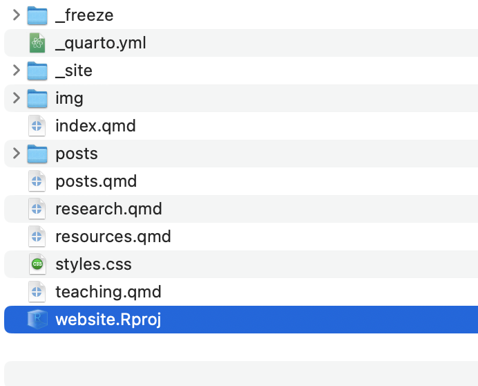
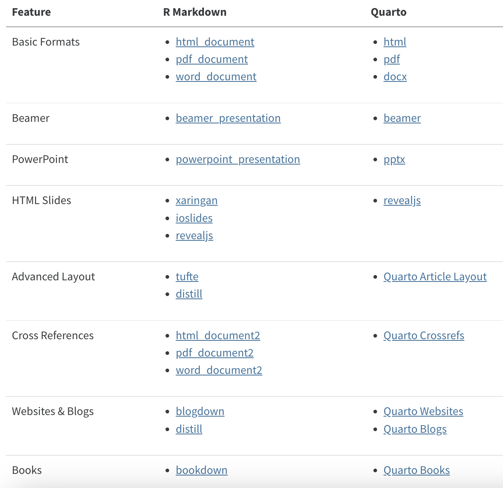

About six months ago, the team at RStudio (now Posit) released Quarto v1.0, a new “open-source scientific and technical publishing system.” At the time, it barely crossed my radar: it looked and sounded a lot like a repackaging of RMarkdown, so I quickly scanned the press release and immediately forgot about it. I’m already a heavy Markdown user – whenever possible I prefer to write in plain text, or close to it, rather than in something with more complicated syntax like raw HTML or, god forbid, LaTeX. I thought that the tools I was using were good enough, and didn’t feel the need to switch.
It’s only in the last few weeks that I’ve come to appreciate how much better Quarto is than everything it replaces, at least from what I’ve seen so far.1 So in the hopes of helping those of you who have ignored Quarto like I did, here are three specific ways that switching to Quarto has made my life easier:
Creating slides
I have been a heavy xaringan user, a way to create slides quickly and easily using RMarkdown (authored by the inimitable Yihui Xie). xaringan is terrific for creating slides quickly, but it’s also a bit clunky: for example figuring out how to get images to appear exactly as you want without inserting raw HTML has always been a headache for me. Quarto presentations are essentially xaringan 2.0 (Yihui Xie is one of the creators of Quarto), and they seem to be much improved.

There are several features worth noting here.
- It’s very easy to set up columns (or more complex layouts) to get the layout you want.
- Images just work: no resizing needed.
- Footnotes are easy to create (just type
^[Footnote here]) and a great for including ancillary information (in this case, answers that students can refer back to when they review the slides). - Out of the box, there are several very nice features for presenting and teaching, including a presentation mode and the ability to write on slides (and save that writing for later).
I’m using outputting these to html using the revealjs format, which is what I’d recommend (esp. if you want the presentation features), but you can also save to Powerpoint or Beamer.
Publishing a website
The other way I’ve been using Quarto in the last week is to … update this website! Previously I’d been using blogdown + Hugo, which, honestly, I was pretty satisfied with. But every once in a while, staying on top of a version update for Hugo or remembering how to use some esoteric blogdown feature would give me trouble. A quick look over the Quarto websites documentation gave me the impression that it would be both a quick switch and an even simpler way to maintain my (very limited) web presence. You can, of course, see the new website for yourself.
What I like most about it so far is how simple and transparent the whole process is: by removing Hugo as an intermediary, it feels much more obvious how we get from the .qmd (Quarto Markdown) files that I’m writing to the actual HTML that you are seeing right now.

You can see here how simple it all is – the .qmd files are the individual pages on the site, posts is where I keep my blog posts, _site is where the outputted HTML gets stored, and _freeze holds a computational cache for already-compiled posts. You can examine the the GitHub repository for the site here.
The biggest headache was converting my old blog posts: many of those posts contained R code that no longer worked (because I no longer had the packages installed, or I’d done something dumb like refer directly to a larger file on my local computer). Once I fixed those, the switch was essentially seamless. I still have some left to fix, but I already prefer the way they look. Quarto manages blog posts (and other types of lists of content) with a really elegant features called listings.
Unifying process and syntax
Perhaps the biggest benefit of the switch to Quarto is that the amount of information I need to retain about how to translate my plain-text scientific writing (whether it’s an article, a blog post, a slide, or whatever else). Since Quarto unifies all of these different mediums, I no longer have to remember all of the different quirks of the different RMarkdown tools I had been using (blogdown/xaringan/Shiny/etc) – everything works the same, and in general, it also works better. For those of you switching from these tools, I found this post exceptionally helpful in summarizing what aspects of Quarto are replacing existing RMarkdown functionality.

Wrapping up
Of course, these three are just the tip of the scientific writing improvements iceberg that Quarto seems to offer. To learn more, I recommend checking out the substantial amount of documentation already available for Quarto, starting with the guide.
I should probably say that I am definitely not getting paid or compensated in any way for this – I just think the Posit team have really knocked it out of the park with Quarto. And it’s really just the beginning. I have resisted actually drafting articles using RMarkdown just because of the particular requirements of journal formatting and submission, but if this new publishing system can help all of me shift away from the waking nightmare that is writing in LaTeX, it might finally be the year to make the shift.
Happy writing!